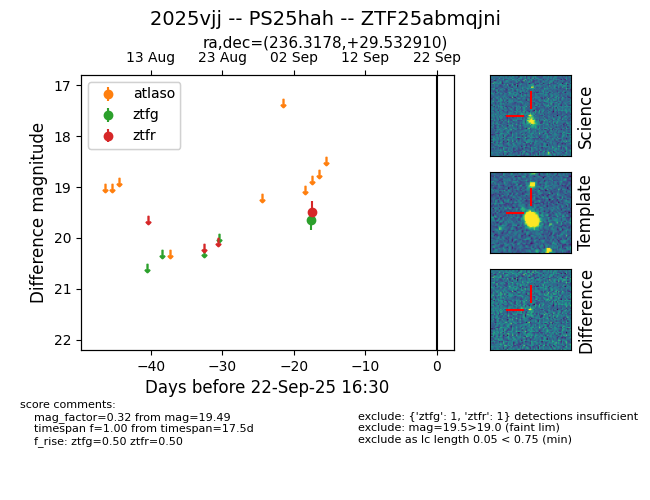

FINK: ZTF25abmqjni
Lasair: ZTF25abmqjni
ALeRCE: ZTF25abmqjni
TNS: 2025vjj
YSE: 2025vjj
ZTF25abmqjni (ztf,fink)
2025vjj (tns,yse)
PS25hah (panstarrs)
equatorial (ra, dec) = (236.3178,+29.53291)
galactic (l, b) = (47.0671,+51.89207)

last ztfg=19.64, ztfr=19.49
1 ztfg, 1 ztfr detections